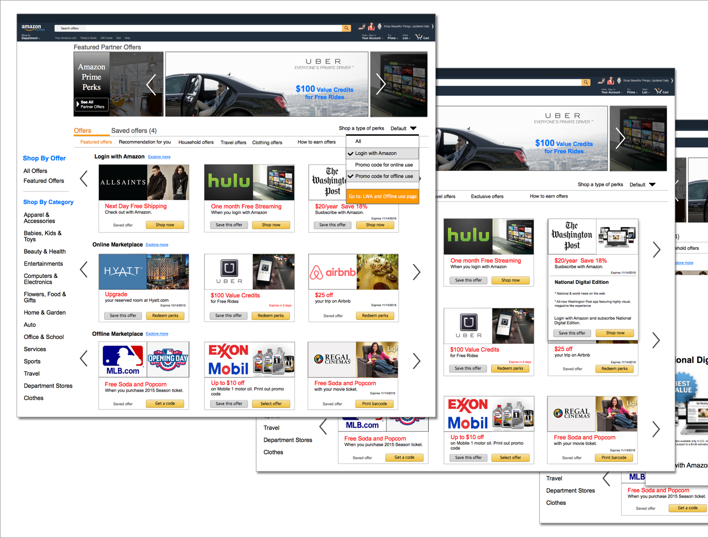
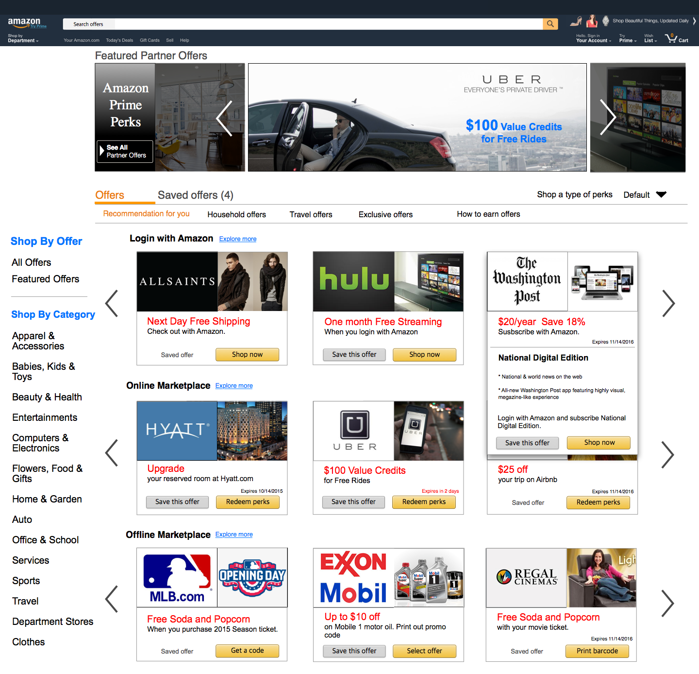
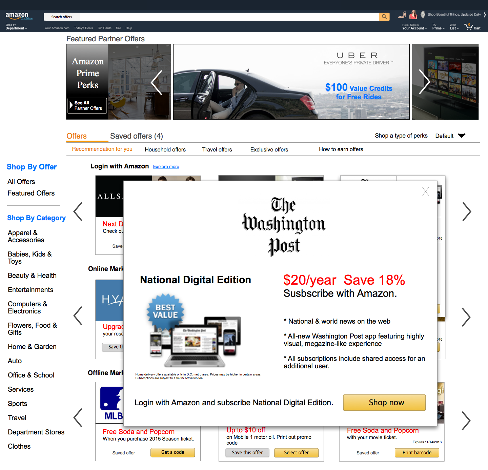
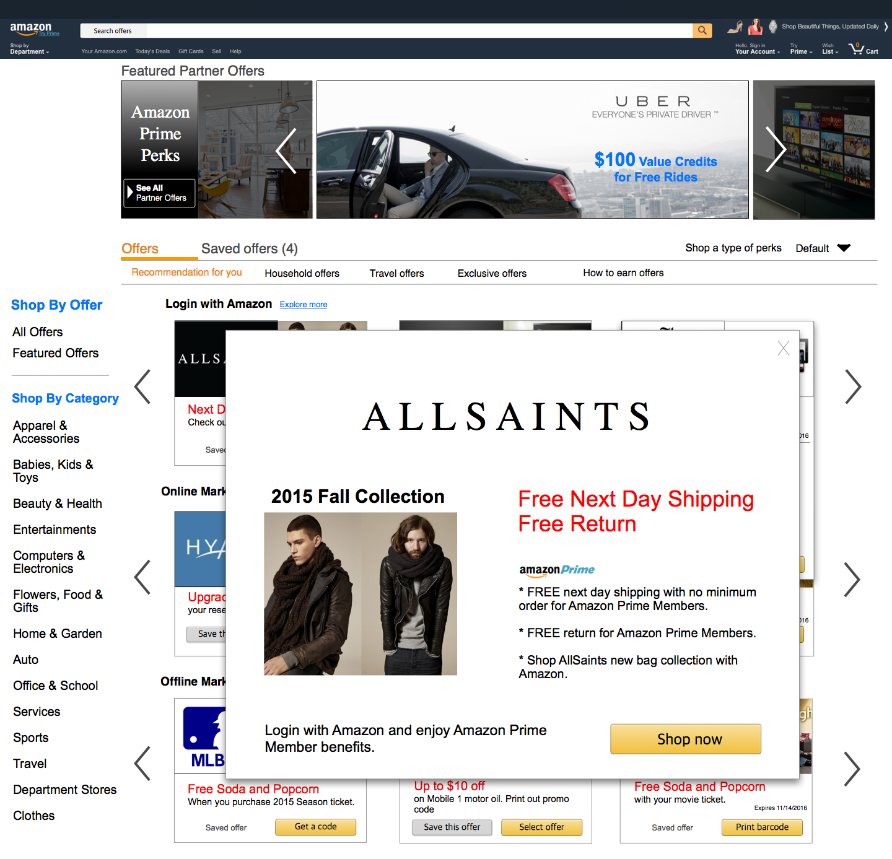
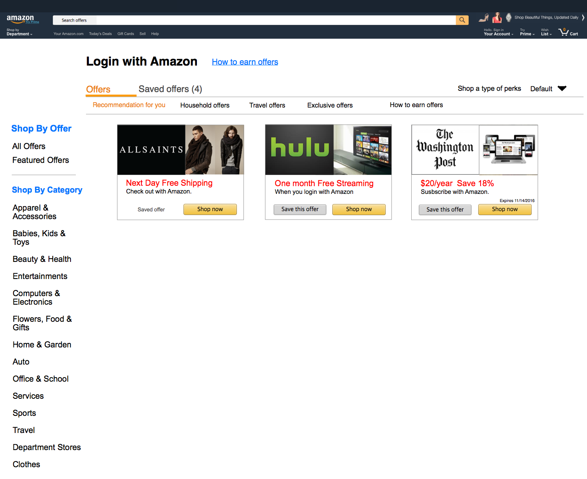
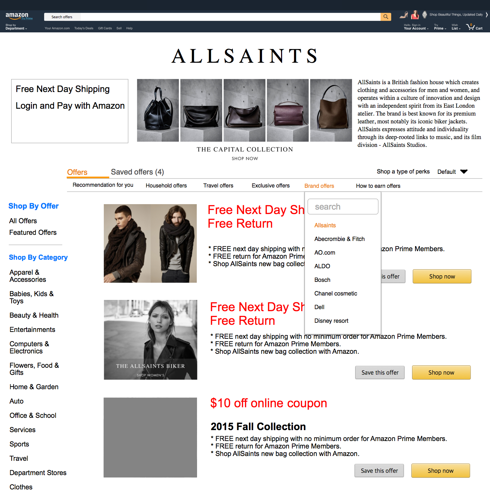
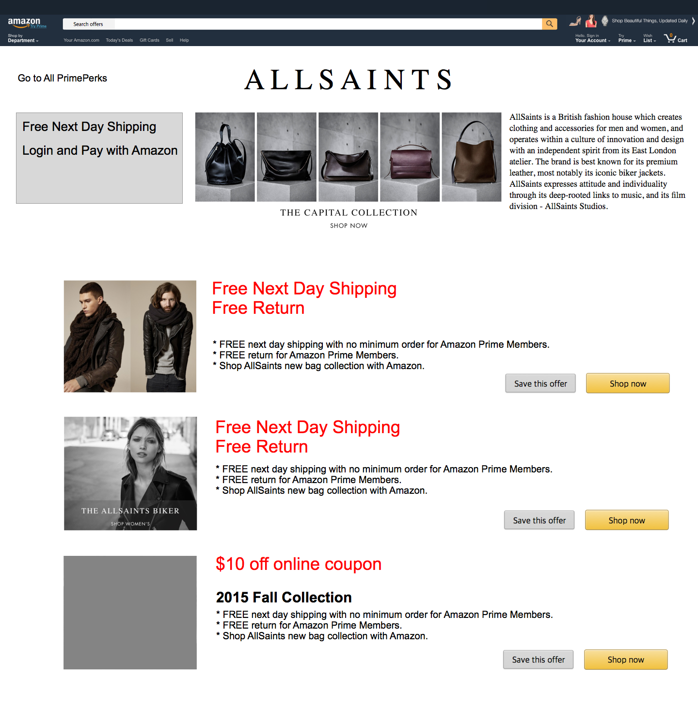

Prime Perks
Wireframe, interaction flow, mockup, high-fidelity prototype
July, 2015 (duration: 2 week)
Given that Prime team is creating a new experience that is outside of the standard Amazon interaction flow, it is prudent to carve out a UX designer to work closely with product management in defining the experience of customers discovering and engaging with partner offers. I participated in to build Prime team's new experience on Prime as a UX designer. Prime team also needed visual design support – working closely with partners to develop co-branded marketing collateral. I suggested a couple of layouts and interaction on Prime page.
Prime main page
Prime Perks landing page
Perks quick view
Perks pop-up page UI A
Perks pop-up page UI B
Perks need to be logged-in with Amazon
Detail page UI A
Detail page UI B
